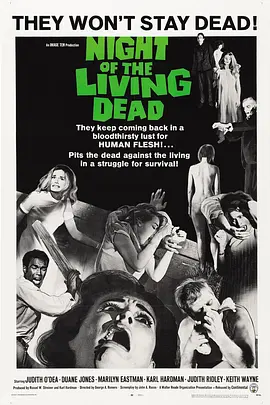

7.4
活死人之夜
Night of the Living Dead
1968
美国
评分 7.4
导演:
乔治·A·罗梅罗
演员:
杜安·琼斯 / 朱迪丝·奥迪娅 / 卡尔·哈德曼 / 基思·韦恩 / 凯拉·舍恩
类型:
恐怖,悬疑
剧情简介
黄昏的墓园里风声渐紧，芭芭拉与哥哥原本只是前来悼念亲人，却在空荡的树林间撞见举止诡异的陌生男子。他步伐僵硬，表情空洞，像被某种力量控制般逼近。袭击突如其来，混乱间哥哥惨遭撕咬，芭芭拉慌乱奔逃，跌跌撞撞闯入一座偏僻的民宅。屋内寂静得令人心慌，她借着昏暗的光线试图寻找庇护，却只听见远处不断聚拢的脚步声，像是某种饥饿的合唱。不久，陌生男子本闯入屋内，他镇定却警觉，迅速察觉外头聚集的并非普通人，而是一群行尸般的袭击者。两人合力封锁窗门，屋内的紧张氛围随着外界的拍击声逐渐升温。就在情绪几乎绷断之际，地下室的门被推开，另一组幸存者现身。每个人都怀着不同的恐惧与判断，找寻安全的方法，却也在困境中不断发生摩擦。屋外的亡者越聚越多，像被某种无形信号吸引，持续包围房子。屋内的人则在有限的空间与物资中尝试合作：有人强化防御，有人想逃离，有人坚持固守。微弱的灯光下，他们的神情在坚强与绝望之间反复拉扯。随着夜色加深，那些行尸的呻吟与撞击声愈发清晰，生与死的距离仿佛只隔着一层薄薄的木板。影片以压迫的节奏推进，让观众在逼仄的空间中与角色一同面对不断逼近的黑暗与未知。